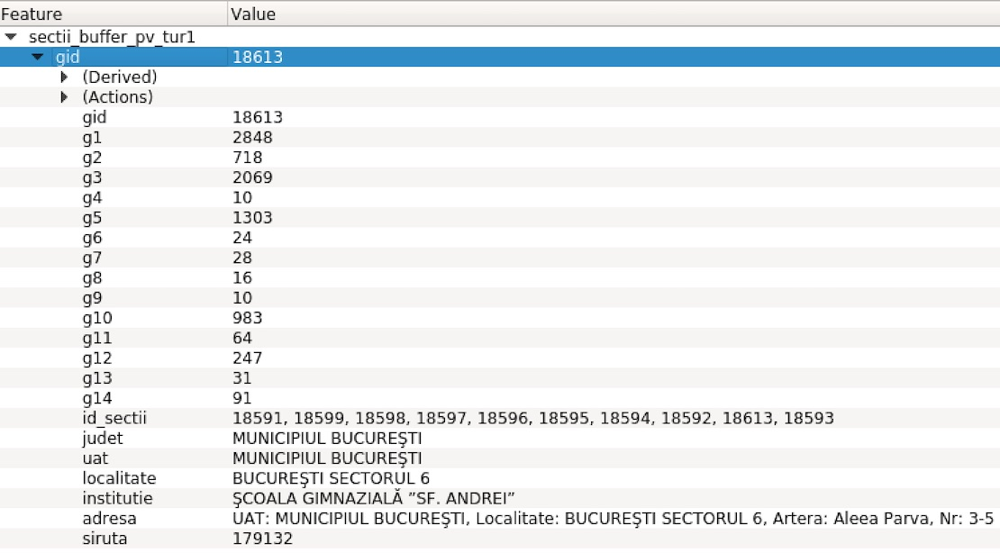
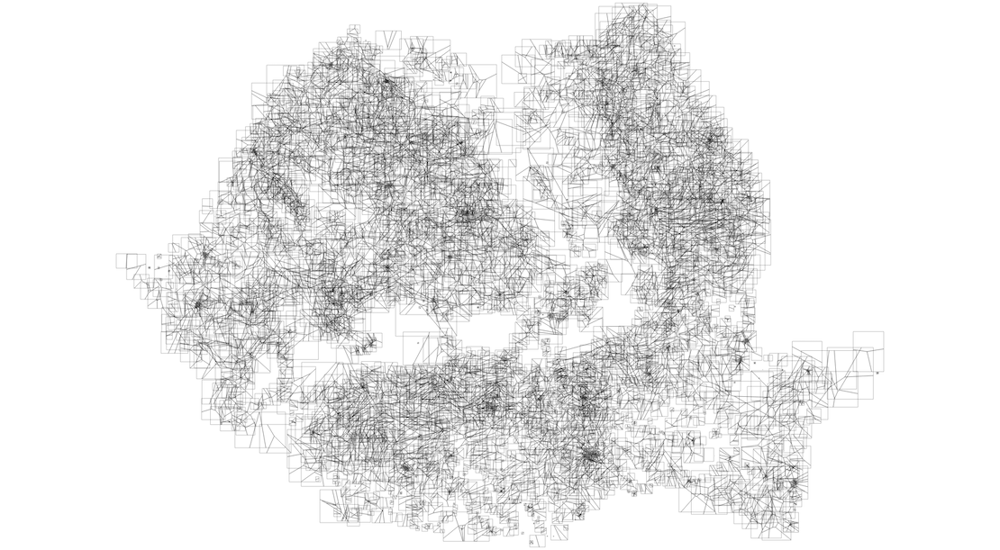
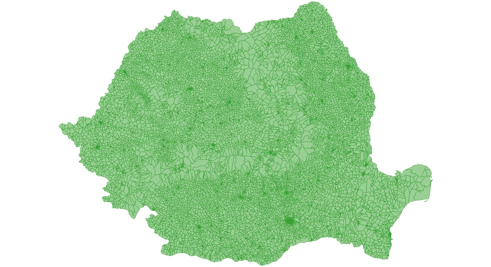
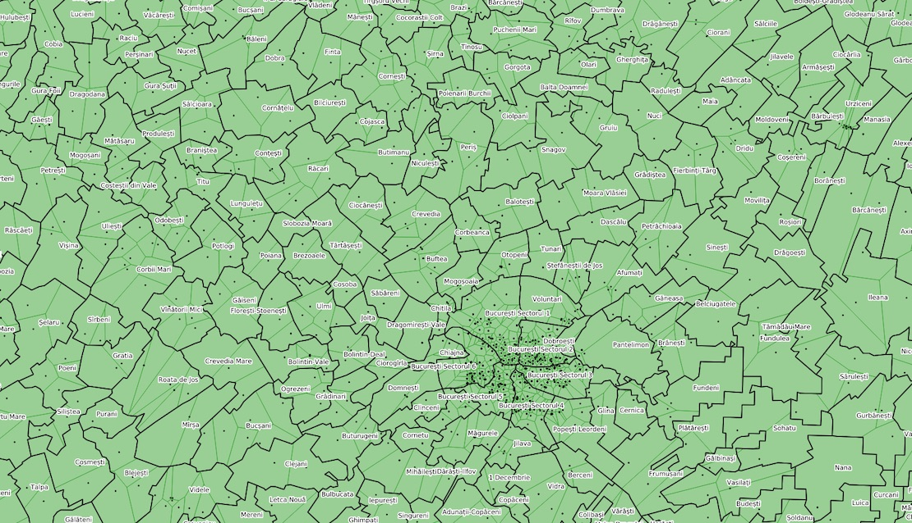
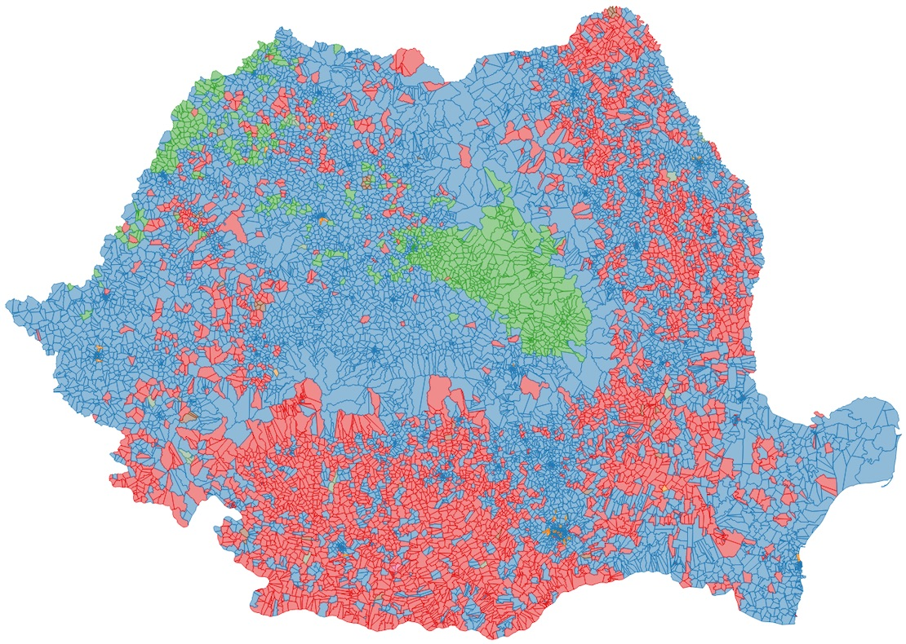
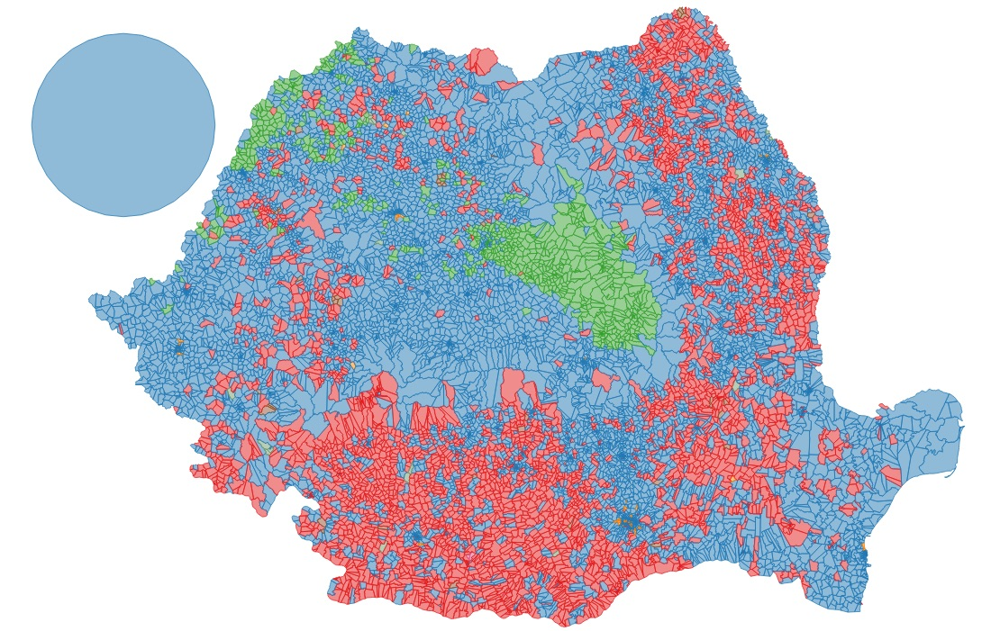

Cartografie electorală în linie de comandă - Partea 3: Realizarea hărții la nivel de secție de votare (poligon)
3.1. Definirea problemei
Ziceam în introducere că ne-am propus să ilustrăm distribuția votului la cel mai detaliat nivel cu putință. Reprezentările clasice se opresc de regulă la nivel de UAT. Noi avem însă datele la nivel de secție. Este drept, secțiile sînt elemente punctuale și este extrem de greu de definit "bazinul" alocat unei secții. Fiecărei secții îi sînt arondate o serie de adrese iar pe site-ul AEP există o bază de date cu distribuția acestor adrese pe secții. Geocodarea lor și transformarea lor în poligoane este însă o sarcină extrem de dificilă, neștiind ce teritoriu putem aloca pentru fiecare adresă punctuală. De aceea, vom alege o metodă mult mai simplă, chiar dacă nu va produce rezultate precise (de altfel, imposibil de obținut). Pentru acesta am ales să împărțim teritoriul unui UAT în subdiviziuni folosind tehnica poligoanelor Voronoi. Astfel, pentru fiecare secție vom obține un poligon ce are secția în apropiere de centru. Suprafața poligonului va depinde de numărul și de poziția celorlalte secții din cadrul UAT-ului. Cum am precizat deja, nu este suprafața reală a secției de votare dar tehnica ne oferă o metodă decentă de aproximare a acesteia și un bun pretext de spațializare cu o granulometrie mai mare a rezultatelor votului. O potențială problemă o reprezintă secțiile multiple din cadrul unor instituții (cum ar fi școlile). Pentru aceste situații, setul de date cu secții descărcat de la AEP oferă o poziție unică, centrată pe școală sau instituția unde se găsesc secțiile. Am putea "mișca" puțin locațiile acelor secții dar am avea o problemă la generarea poligoanelor Voronoi pentru că ar fi foarte mici. De aceea am luat decizia de a păstra locația unică și de a cumula numărul de voturi la respectivul poligon, păstrînd "istoricul" secțiilor ce au contribuit la rezultat.
Cum procedăm? Deși problema pare simplă, implică un număr important de pași intermediari.
3.2. Spațializarea proceselor verbale
Presupune crearea unor tabele noi, sectii_pv_tur1 în schema tur1 și sectii_pv_tur2 în schema tur2, care să includă, pe lîngă coloanele cu rezultatele votului, atributele relevante din tabela sectii:
psql -h localhost -p 5432 -U user -d alegeri -c "
CREATE TABLE tur1.sectii_pv_tur1 AS select sectii.geom, sectii.gid, sectii.judet, sectii.uat, sectii.localitate, sectii.numarsectie, sectii.institutie, sectii.adresa, pv_tur1.siruta, pv_tur1.g1, pv_tur1.g2, pv_tur1.g3, pv_tur1.g4, pv_tur1.g5, pv_tur1.g6, pv_tur1.g7, pv_tur1.g8, pv_tur1.g9, pv_tur1.g10, pv_tur1.g11, pv_tur1.g12, pv_tur1.g13, pv_tur1.g14 FROM referinta.sectii AS sectii, referinta.pv_tur1 AS pv_tur1 WHERE sectii.judet = pv_tur1.județ AND sectii.numarsectie = pv_tur1.nr;
CREATE TABLE tur2.sectii_pv_tur2 AS select sectii.geom, sectii.gid, sectii.judet, sectii.uat, sectii.localitate, sectii.numarsectie, sectii.institutie, sectii.adresa, pv_tur2.siruta, pv_tur2.g1, pv_tur2.g2 FROM referinta.sectii AS sectii, referinta.pv_tur2 AS pv_tur2 WHERE sectii.judet = pv_tur2.județ AND sectii.numarsectie = pv_tur2.nr;"
Rezultatul este prezentat în imaginea de mai jos. Practic, pe lîngă cîmpurile originale din tabela sectii am adus cîmpurile g[x] pentru cei 14 candidați din turul 1 și cei 2 candidați din turul 2. Automat, o dată cu acest join, au fost eliminate secțiile din diaspora.
Rezultatul unirii dintre tabela secții și tabelele cu procesele verbale.
3.3. Comasarea secțiilor cu aceeași locație
Spuneam anterior că o serie de secții se găsesc la aceeași adresă, avînd coordonate identice în tabela sectii. Un exemplu de acest gen este Școala "Sfântu Andrei" din Drumul Taberei unde, pe perioada alegerilor, au funcționat 10 secții de votare:
Exemplu de secții multiple la aceeași adresă.
3.2.1. Ștergerea geometriilor duplicate
Primul pas în vederea comasării este crearea unui strat nou în care secțiile cu geometrie duplicată sînt eliminate. Pentru aceasta facem o copie a tabelei sectii_pv_tur1 pe care o vom denumi sectii_unic. Apoi vom șterge din această tabelă elementele cu geometrie duplicată:
psql -h localhost -p 5432 -U user -d alegeri -c "
CREATE TABLE sandbox.sectii_unic AS SELECT geom, gid FROM tur1.sectii_pv_tur1;
DELETE FROM sandbox.sectii_unic a
WHERE EXISTS (SELECT 1 FROM sandbox.sectii_unic b
WHERE a.gid < b.gid
AND ST_DWithin(a.geom, b.geom, 1));"
3.2.2. Crearea de buffer-e pentru secții
În continuare, vom face un buffer de 1 metru în jurul fiecărei secții. Tabela nou creată o vom intitula sectii_buffer:
psql -h localhost -p 5432 -U user -d alegeri -c "
CREATE TABLE sandbox.sectii_buffer AS SELECT ST_Buffer(sectii.geom, 1) AS geom, sectii.gid FROM sandbox.sectii_unic AS sectii;"
3.2.3. Cumularea rezultatelor din secțiile cu geometrie duplicată
Am făcut acest buffer special pentru comasarea secțiilor cu geometrie duplicată. Diametrul mic, de doar 1 metru, ne asigură că nu vom include secții de la altă adresă. Vom folosi funcția SQL SUM pentru a cumula valorile din cîmpurile g[X] și pentru a le scrie în două noi tabele intermediare, sectii_buffer_pv_tur1 și sectii_buffer_pv_tur2. De asemenea, vom folosi funcția STRING_AGG pentru a stoca în coloana id_sectii toate indicativele secțiilor ale căror rezultate au fost cumulate. Funcția MAX nu are decît rolul de a prelua o singură valoare din cîmpurile judet, uat, localitate, institutie, adresa și siruta. Oricum, valorile sînt identice pentru toate secțiile cu valori cumulate.
psql -h localhost -p 5432 -U user -d alegeri -c "
CREATE TABLE tur1.sectii_buffer_pv_tur1 AS SELECT buffer.geom, buffer.gid, SUM(sectii.g1 :: INTEGER) AS g1, SUM(sectii.g2 :: INTEGER) AS g2, SUM(sectii.g3 :: INTEGER) AS g3, SUM(sectii.g4 :: INTEGER) AS g4, SUM(sectii.g5 :: INTEGER) AS g5, SUM(sectii.g6 :: INTEGER) AS g6, SUM(sectii.g7 :: INTEGER) AS g7, SUM(sectii.g8 :: INTEGER) AS g8, SUM(sectii.g9 :: INTEGER) AS g9, SUM(sectii.g10 :: INTEGER) AS g10, SUM(sectii.g11 :: INTEGER) AS g11, SUM(sectii.g12 :: INTEGER) AS g12, SUM(sectii.g13 :: INTEGER) AS g13, SUM(sectii.g14 :: INTEGER) AS g14, STRING_AGG(sectii.gid :: character varying, ', ') AS id_sectii, MAX(sectii.judet) AS judet, MAX(sectii.uat) AS uat, MAX(sectii.localitate) AS localitate, MAX(sectii.institutie) AS institutie, MAX(sectii.adresa) AS adresa, MAX(sectii.siruta) AS siruta
FROM sandbox.sectii_buffer AS buffer, tur1.sectii_pv_tur1 AS sectii
WHERE ST_Within(sectii.geom, buffer.geom) GROUP BY buffer.geom, buffer.gid;
CREATE TABLE tur2.sectii_buffer_pv_tur2 AS SELECT buffer.geom, buffer.gid, SUM(sectii.g1 :: INTEGER) AS g1, SUM(sectii.g2 :: INTEGER) AS g2, STRING_AGG(sectii.gid :: character varying, ', ') AS id_sectii, MAX(sectii.judet) AS judet, MAX(sectii.uat) AS uat, MAX(sectii.localitate) AS localitate, MAX(sectii.institutie) AS institutie, MAX(sectii.adresa) AS adresa, MAX(sectii.siruta) AS siruta
FROM sandbox.sectii_buffer AS buffer, tur2.sectii_pv_tur2 AS sectii
WHERE ST_Within(sectii.geom, buffer.geom) GROUP BY buffer.geom, buffer.gid;"
Figura de mai jos prezintă un exemplu de cumulare a atributelor secțiilor cu geometrii duplicate:
Cumulare a atributelor secțiilor cu geometrii duplicate.
3.2.4. Conversie buffer-e în centroizi
Buffer-ele și-au jucat rolul, e timpul să ne întoarcem la puncte. Pentru aceasta vom converti fiecare buffer în puncte (centroizi), le vom păstra atributele și vom salva tabela nou creată cu numele sectii_pv_cumulat_tur1, respectiv: sectii_pv_cumulat_tur2:
psql -h localhost -p 5432 -U user -d alegeri -c "
CREATE TABLE tur1.sectii_pv_cumulat_tur1 AS SELECT ST_Centroid(buffer.geom) as geom, buffer.gid, buffer.judet, buffer.uat, buffer.localitate, buffer.siruta, buffer.institutie, buffer.adresa, buffer.id_sectii, buffer.g1, buffer.g2, buffer.g3, buffer.g4, buffer.g5, buffer.g6, buffer.g7, buffer.g8, buffer.g9, buffer.g10, buffer.g11, buffer.g12, buffer.g13, buffer.g14 FROM tur1.sectii_buffer_pv_tur1 AS buffer;
CREATE TABLE tur2.sectii_pv_cumulat_tur2 AS SELECT ST_Centroid(buffer.geom) as geom, buffer.gid, buffer.judet, buffer.uat, buffer.localitate, buffer.siruta, buffer.institutie, buffer.adresa, buffer.id_sectii, buffer.g1, buffer.g2 FROM tur2.sectii_buffer_pv_tur2 AS buffer;"
3.3. Diverse calcule tabelare
3.3.1. Transferarea voturilor de la secția 8618 la 8606 și de la secția 15499 la 15751
UAT-urile Miercurea Ciuc și Timișoara au insulițe mici în interiorul altor UAT-uri (ex: Aeroportul Internațional Traian Vuia - Timișoara). Deoarece au suprafețe foarte mici, geometriile acestor insulițe au fost șterse în faza de simplificare a limitelor UAT. Pentru a nu pierde voturile, le vom transfera localităților mamă și vom șterge respectivele înregistrări din tabelele sectii_pv_cumulat_tur1 și sectii_pv_cumulat_tur2.
psql -h localhost -p 5432 -U user -d alegeri -c "
UPDATE tur1.sectii_pv_cumulat_tur1 SET g1 = (g1 + 117)::numeric WHERE gid = 15751;
UPDATE tur1.sectii_pv_cumulat_tur1 SET g2 = (g2 + 18)::numeric WHERE gid = 15751;
UPDATE tur1.sectii_pv_cumulat_tur1 SET g3 = (g2 + 112)::numeric WHERE gid = 15751;
UPDATE tur1.sectii_pv_cumulat_tur1 SET g4 = (g2 + 4)::numeric WHERE gid = 15751;
UPDATE tur1.sectii_pv_cumulat_tur1 SET g5 = (g2 + 23)::numeric WHERE gid = 15751;
UPDATE tur1.sectii_pv_cumulat_tur1 SET g6 = (g2 + 0)::numeric WHERE gid = 15751;
UPDATE tur1.sectii_pv_cumulat_tur1 SET g7 = (g2 + 0)::numeric WHERE gid = 15751;
UPDATE tur1.sectii_pv_cumulat_tur1 SET g8 = (g2 + 4)::numeric WHERE gid = 15751;
UPDATE tur1.sectii_pv_cumulat_tur1 SET g9 = (g2 + 2)::numeric WHERE gid = 15751;
UPDATE tur1.sectii_pv_cumulat_tur1 SET g10 = (g2 + 28)::numeric WHERE gid = 15751;
UPDATE tur1.sectii_pv_cumulat_tur1 SET g11 = (g2 + 4)::numeric WHERE gid = 15751;
UPDATE tur1.sectii_pv_cumulat_tur1 SET g12 = (g2 + 11)::numeric WHERE gid = 15751;
UPDATE tur1.sectii_pv_cumulat_tur1 SET g13 = (g2 + 1)::numeric WHERE gid = 15751;
UPDATE tur1.sectii_pv_cumulat_tur1 SET g14 = (g2 + 5)::numeric WHERE gid = 15751;
DELETE FROM tur1.sectii_pv_cumulat_tur1 WHERE gid = 15499;
UPDATE tur1.sectii_pv_cumulat_tur1 SET g1 = (g1 + 6)::numeric WHERE gid = 8606;
UPDATE tur1.sectii_pv_cumulat_tur1 SET g2 = (g2 + 1)::numeric WHERE gid = 8606;
UPDATE tur1.sectii_pv_cumulat_tur1 SET g3 = (g2 + 3)::numeric WHERE gid = 8606;
UPDATE tur1.sectii_pv_cumulat_tur1 SET g4 = (g2 + 68)::numeric WHERE gid = 8606;
UPDATE tur1.sectii_pv_cumulat_tur1 SET g5 = (g2 + 6)::numeric WHERE gid = 8606;
UPDATE tur1.sectii_pv_cumulat_tur1 SET g6 = (g2 + 0)::numeric WHERE gid = 8606;
UPDATE tur1.sectii_pv_cumulat_tur1 SET g7 = (g2 + 0)::numeric WHERE gid = 8606;
UPDATE tur1.sectii_pv_cumulat_tur1 SET g8 = (g2 + 1)::numeric WHERE gid = 8606;
UPDATE tur1.sectii_pv_cumulat_tur1 SET g9 = (g2 + 1)::numeric WHERE gid = 8606;
UPDATE tur1.sectii_pv_cumulat_tur1 SET g10 = (g2 + 1)::numeric WHERE gid = 8606;
UPDATE tur1.sectii_pv_cumulat_tur1 SET g11 = (g2 + 0)::numeric WHERE gid = 8606;
UPDATE tur1.sectii_pv_cumulat_tur1 SET g12 = (g2 + 1)::numeric WHERE gid = 8606;
UPDATE tur1.sectii_pv_cumulat_tur1 SET g13 = (g2 + 1)::numeric WHERE gid = 8606;
UPDATE tur1.sectii_pv_cumulat_tur1 SET g14 = (g2 + 0)::numeric WHERE gid = 8606;
DELETE FROM tur1.sectii_pv_cumulat_tur1 WHERE gid=8618;
UPDATE tur2.sectii_pv_cumulat_tur2 SET g1 = (g1 + 268)::numeric WHERE gid = 15751;
UPDATE tur2.sectii_pv_cumulat_tur2 SET g2 = (g2 + 74)::numeric WHERE gid = 15751;
DELETE FROM tur2.sectii_pv_cumulat_tur2 WHERE gid = 15499;
UPDATE tur2.sectii_pv_cumulat_tur2 SET g1 = (g1 + 49)::numeric WHERE gid = 8606;
UPDATE tur2.sectii_pv_cumulat_tur2 SET g2 = (g2 + 15)::numeric WHERE gid = 8606;
DELETE FROM tur2.sectii_pv_cumulat_tur2 WHERE gid=8618;"
3.3.2. Calcularea voturilor în procente
Avem numărul de voturi primit de fiecare candidat. Totuși, lumea este obișnuită să analizeze în procente prestația candidaților. Pentru aceasta vom adăuga cîmpuri de tip g[X]p unde vom introduce procentele obținute de fiecare candidat în fiecare secție:
psql -h localhost -p 5432 -U user -d alegeri -c "
ALTER TABLE tur1.sectii_pv_cumulat_tur1 ADD COLUMN g1p float;
UPDATE tur1.sectii_pv_cumulat_tur1 SET g1p = ROUND(((g1 / (g1 + g2 + g3 + g4 + g5 + g6 + g7 + g8 + g9 + g10 + g11 + g12 + g13 + g14)::float) * 100)::numeric, 2);
ALTER TABLE tur1.sectii_pv_cumulat_tur1 ADD COLUMN g2p float;
UPDATE tur1.sectii_pv_cumulat_tur1 SET g2p = ROUND(((g2 / (g1 + g2 + g3 + g4 + g5 + g6 + g7 + g8 + g9 + g10 + g11 + g12 + g13 + g14)::float) * 100)::numeric, 2);
ALTER TABLE tur1.sectii_pv_cumulat_tur1 ADD COLUMN g3p float;
UPDATE tur1.sectii_pv_cumulat_tur1 SET g3p = ROUND(((g3 / (g1 + g2 + g3 + g4 + g5 + g6 + g7 + g8 + g9 + g10 + g11 + g12 + g13 + g14)::float) * 100)::numeric, 2);
ALTER TABLE tur1.sectii_pv_cumulat_tur1 ADD COLUMN g4p float;
UPDATE tur1.sectii_pv_cumulat_tur1 SET g4p = ROUND(((g4 / (g1 + g2 + g3 + g4 + g5 + g6 + g7 + g8 + g9 + g10 + g11 + g12 + g13 + g14)::float) * 100)::numeric, 2);
ALTER TABLE tur1.sectii_pv_cumulat_tur1 ADD COLUMN g5p float;
UPDATE tur1.sectii_pv_cumulat_tur1 SET g5p = ROUND(((g5 / (g1 + g2 + g3 + g4 + g5 + g6 + g7 + g8 + g9 + g10 + g11 + g12 + g13 + g14)::float) * 100)::numeric, 2);
ALTER TABLE tur1.sectii_pv_cumulat_tur1 ADD COLUMN g6p float;
UPDATE tur1.sectii_pv_cumulat_tur1 SET g6p = ROUND(((g6 / (g1 + g2 + g3 + g4 + g5 + g6 + g7 + g8 + g9 + g10 + g11 + g12 + g13 + g14)::float) * 100)::numeric, 2);
ALTER TABLE tur1.sectii_pv_cumulat_tur1 ADD COLUMN g7p float;
UPDATE tur1.sectii_pv_cumulat_tur1 SET g7p = ROUND(((g7 / (g1 + g2 + g3 + g4 + g5 + g6 + g7 + g8 + g9 + g10 + g11 + g12 + g13 + g14)::float) * 100)::numeric, 2);
ALTER TABLE tur1.sectii_pv_cumulat_tur1 ADD COLUMN g8p float;
UPDATE tur1.sectii_pv_cumulat_tur1 SET g8p = ROUND(((g8 / (g1 + g2 + g3 + g4 + g5 + g6 + g7 + g8 + g9 + g10 + g11 + g12 + g13 + g14)::float) * 100)::numeric, 2);
ALTER TABLE tur1.sectii_pv_cumulat_tur1 ADD COLUMN g9p float;
UPDATE tur1.sectii_pv_cumulat_tur1 SET g9p = ROUND(((g9 / (g1 + g2 + g3 + g4 + g5 + g6 + g7 + g8 + g9 + g10 + g11 + g12 + g13 + g14)::float) * 100)::numeric, 2);
ALTER TABLE tur1.sectii_pv_cumulat_tur1 ADD COLUMN g10p float;
UPDATE tur1.sectii_pv_cumulat_tur1 SET g10p = ROUND(((g10 / (g1 + g2 + g3 + g4 + g5 + g6 + g7 + g8 + g9 + g10 + g11 + g12 + g13 + g14)::float) * 100)::numeric, 2);
ALTER TABLE tur1.sectii_pv_cumulat_tur1 ADD COLUMN g11p float;
UPDATE tur1.sectii_pv_cumulat_tur1 SET g11p = ROUND(((g11 / (g1 + g2 + g3 + g4 + g5 + g6 + g7 + g8 + g9 + g10 + g11 + g12 + g13 + g14)::float) * 100)::numeric, 2);
ALTER TABLE tur1.sectii_pv_cumulat_tur1 ADD COLUMN g12p float;
UPDATE tur1.sectii_pv_cumulat_tur1 SET g12p = ROUND(((g12 / (g1 + g2 + g3 + g4 + g5 + g6 + g7 + g8 + g9 + g10 + g11 + g12 + g13 + g14)::float) * 100)::numeric, 2);
ALTER TABLE tur1.sectii_pv_cumulat_tur1 ADD COLUMN g13p float;
UPDATE tur1.sectii_pv_cumulat_tur1 SET g13p = ROUND(((g13 / (g1 + g2 + g3 + g4 + g5 + g6 + g7 + g8 + g9 + g10 + g11 + g12 + g13 + g14)::float) * 100)::numeric, 2);
ALTER TABLE tur1.sectii_pv_cumulat_tur1 ADD COLUMN g14p float;
UPDATE tur1.sectii_pv_cumulat_tur1 SET g14p = ROUND(((g14 / (g1 + g2 + g3 + g4 + g5 + g6 + g7 + g8 + g9 + g10 + g11 + g12 + g13 + g14)::float) * 100)::numeric, 2);
ALTER TABLE tur2.sectii_pv_cumulat_tur2 ADD COLUMN g1p float;
UPDATE tur2.sectii_pv_cumulat_tur2 SET g1p = ROUND(((g1 / (g1 + g2)::float) * 100)::numeric, 2);
ALTER TABLE tur2.sectii_pv_cumulat_tur2 ADD COLUMN g2p float;
UPDATE tur2.sectii_pv_cumulat_tur2 SET g2p = ROUND(((g2 / (g1 + g2)::float) * 100)::numeric, 2);"
3.3.3. Calcularea cîștigătorului la nivel de secție
Vom crea o coloană nouă, numită castigator, în care vom stoca indicativul cîștigătorul respectivei secții. În turul 2, în caz de egaliatate, vom stoca valoarea 0:
psql -h localhost -p 5432 -U user -d alegeri -c "
ALTER TABLE tur1.sectii_pv_cumulat_tur1 ADD COLUMN castigator integer;
UPDATE tur1.sectii_pv_cumulat_tur1 SET castigator = CASE
WHEN GREATEST(g1, g2, g3, g4, g5, g6, g7, g8, g9, g10, g11, g12, g13, g14) = g1 THEN 1
WHEN GREATEST(g1, g2, g3, g4, g5, g6, g7, g8, g9, g10, g11, g12, g13, g14) = g2 THEN 2
WHEN GREATEST(g1, g2, g3, g4, g5, g6, g7, g8, g9, g10, g11, g12, g13, g14) = g3 THEN 3
WHEN GREATEST(g1, g2, g3, g4, g5, g6, g7, g8, g9, g10, g11, g12, g13, g14) = g4 THEN 4
WHEN GREATEST(g1, g2, g3, g4, g5, g6, g7, g8, g9, g10, g11, g12, g13, g14) = g5 THEN 5
WHEN GREATEST(g1, g2, g3, g4, g5, g6, g7, g8, g9, g10, g11, g12, g13, g14) = g6 THEN 6
WHEN GREATEST(g1, g2, g3, g4, g5, g6, g7, g8, g9, g10, g11, g12, g13, g14) = g7 THEN 7
WHEN GREATEST(g1, g2, g3, g4, g5, g6, g7, g8, g9, g10, g11, g12, g13, g14) = g8 THEN 8
WHEN GREATEST(g1, g2, g3, g4, g5, g6, g7, g8, g9, g10, g11, g12, g13, g14) = g9 THEN 9
WHEN GREATEST(g1, g2, g3, g4, g5, g6, g7, g8, g9, g10, g11, g12, g13, g14) = g10 THEN 10
WHEN GREATEST(g1, g2, g3, g4, g5, g6, g7, g8, g9, g10, g11, g12, g13, g14) = g11 THEN 11
WHEN GREATEST(g1, g2, g3, g4, g5, g6, g7, g8, g9, g10, g11, g12, g13, g14) = g12 THEN 12
WHEN GREATEST(g1, g2, g3, g4, g5, g6, g7, g8, g9, g10, g11, g12, g13, g14) = g13 THEN 13
WHEN GREATEST(g1, g2, g3, g4, g5, g6, g7, g8, g9, g10, g11, g12, g13, g14) = g14 THEN 14
END;
ALTER TABLE tur2.sectii_pv_cumulat_tur2 ADD COLUMN castigator integer;
UPDATE tur2.sectii_pv_cumulat_tur2 SET castigator = 1 WHERE g1 > g2;
UPDATE tur2.sectii_pv_cumulat_tur2 SET castigator = 2 WHERE g1 < g2;
UPDATE tur2.sectii_pv_cumulat_tur2 SET castigator = 0 WHERE g1 = g2;"
3.4. Crearea poligoanelor asociate secțiilor de votare
3.4.1. Crearea poligoanelor Voronoi
În sfîrșit, am ajuns la pasul în care construim poligoanele secțiilor de votare. După cum am spus mai devreme, facem asta folosind tehnica poligoanelor Voronoi. Ce ne dorim este să construim o interogare care să itereze prin fiecare UAT, să folosească secțiile din respectivul UAT ca informație de intrare pentru funcția ST_VoronoiPolygons din PostGIS pentru a crea poligoanele asociate fiecărei secții. Evident, deoarece funcția nu are un parametru de "mască" pentru generarea poligoanelor, acestea vor depăși suprafața UAT-ului. De aceea, pentru a decupa poligoanele pe limita UAT-ului, vom folosi funcția ST_Intersection. Scenariul interogării SQL este prezentat în figura de mai jos:
Etapele generării poligoanelor Voronoi pentru secțiile de votare.
Interogarea se poate scrie după cum urmează:
psql -h localhost -p 5432 -U user -d alegeri -c "
CREATE TABLE sandbox.voronoi AS
SELECT (ST_Intersection(uat.geom, (ST_Dump(ST_VoronoiPolygons(ST_collect(sectii.geom), extend_to := uat.geom))).geom)) AS geom
FROM tur1.sectii_pv_cumulat_tur1 AS sectii, referinta.uat AS uat WHERE sectii.siruta = uat.natcode GROUP BY uat.geom;"
Secțiile nedecupate arată ca în figura mai jos:
Secțiile nedecupate.
După aplicarea funcției ST_Intersection lucrurile încep să capete conturul dorit:
Secțiile decupate pe conturile UAT.
Observăm totuși o serie de goluri. Sînt cauzate de UAT-urile unde există o singură secție de votare, algoritmul Voronoi neputînd genera geometrii pe baza unui singur punct.
3.4.2. Utilizarea geometriei UAT-ului acolo unde există o singură secție
Soluția logică în situația UAT-urilor cu o singură secție este utilizarea geometriei UAT-ului pentru reprezentarea secției. Pentru aceasta vom rula următoarele comenzi:
psql -h localhost -p 5432 -U user -d alegeri -c "
CREATE TABLE sandbox.gap_voronoi AS
WITH sect AS (SELECT uat.geom, count(sectii.geom) AS total_sectii FROM referinta.uat AS uat LEFT JOIN tur1.sectii_pv_cumulat_tur1 as sectii ON st_contains(uat.geom, sectii.geom) GROUP BY uat.geom)
SELECT sect.geom FROM sect WHERE total_sectii = 1;
CREATE TABLE sandbox.sectii_voronoi AS(
SELECT geom FROM sandbox.voronoi
UNION
SELECT geom FROM sandbox.gap_voronoi
);"
Prima comandă numără iterativ secțiile din fiecare UAT. Atunci cînd totalul este egal cu 1, salvează geometria într-o tabelă nouă, numită gap_voronoi. Vom obține un număr de 292 de geometrii:
Geometria UAT-urilor cu o singură secție de votare.
A doua comandă comasează poligoanele Voronoi cu geometriile UAT-urilor cu o singură secție, obținînd o hartă cu geometriile tuturor secțiilor de votare din România, salvată în tabela numităST_VoronoiPolygons:

Geometria secțiilor de votare din România.
În imaginea de mai jos putem observa un detaliu din geometria secțiilor, geometrii peste care am suprapus limitele UAT-urilor și locațiile secțiilor:
Geometria secțiilor de votare din România - detaliu.
3.4.3. Transferul atributelor de la stațiile de tip punct către poligoanele Voronoi
Operațiile desfășurate anterior s-au făcut doar la nivel de geometrii. Este necesar să asociem și atributele calculate deja la nivel de secție de tip punct cu noile poligoane. Pentru aceasta vom folosi funcția PostGIS ST_Within:
psql -h localhost -p 5432 -U user -d alegeri -c "
CREATE TABLE tur1.sectii_voronoi_pv_tur1 AS SELECT voronoi.geom, sectii.gid, sectii.judet, sectii.uat, sectii.localitate, sectii.siruta, sectii.institutie, sectii.adresa, sectii.id_sectii, sectii.g1, sectii.g2, sectii.g3, sectii.g4, sectii.g5, sectii.g6, sectii.g7, sectii.g8, sectii.g9, sectii.g10, sectii.g11, sectii.g12, sectii.g13, sectii.g14, sectii.g1p, sectii.g2p, sectii.g3p, sectii.g4p, sectii.g5p, sectii.g6p, sectii.g7p, sectii.g8p, sectii.g9p, sectii.g10p, sectii.g11p, sectii.g12p, sectii.g13p, sectii.g14p, sectii.castigator
FROM sandbox.sectii_voronoi as voronoi, tur1.sectii_pv_cumulat_tur1 as sectii
WHERE ST_Within(sectii.geom, voronoi.geom);
CREATE TABLE tur2.sectii_voronoi_pv_tur2 AS SELECT voronoi.geom, sectii.gid, sectii.judet, sectii.uat, sectii.localitate, sectii.siruta, sectii.institutie, sectii.adresa, sectii.id_sectii, sectii.g1, sectii.g2, sectii.g1p, sectii.g2p, sectii.castigator
FROM sandbox.sectii_voronoi as voronoi, tur2.sectii_pv_cumulat_tur2 as sectii
WHERE ST_Within(sectii.geom, voronoi.geom);"
Avînd rezultatele votului asociat cu geometriile poligonale ale secțiilor, putem face o primă încercare de a da culoare votului:
Simbolizarea secțiilor în funcție de cîștigătorul din primul tur.
3.4.4. Inserarea unei entități pentru reprezentarea voturilor din diaspora
BEC publică rezultatele pentru diaspora într-o manieră similară. Scopul nostru este de a prezenta rezultatele la nivel național dar vom include o geometrie separată pentru a centraliza rezultatele din diaspora. Numărul de voturi pentru candidații din cele două tururi a fost preluat de pe platforma informatică a BEC. Noul element vectorual va primi codul gid: 20000.
psql -h localhost -p 5432 -U user -d alegeri -c "
INSERT INTO tur1.sectii_voronoi_pv_tur1 (geom, gid, g1, g2, g3, g4, g5, g6, g7, g8, g9, g10, g11, g12, g13, g14) (SELECT ST_Buffer(ST_SetSRID(ST_MakePoint(2297467, 6009221), 3857), 110000), 20000, 341450, 41550, 178845, 3363, 17727, 1242, 2378, 2575, 2017, 23535, 2741, 11101, 2028, 16056);
UPDATE tur1.sectii_voronoi_pv_tur1 SET g1p = ROUND(((g1 / (g1 + g2 + g3 + g4 + g5 + g6 + g7 + g8 + g9 + g10 + g11 + g12 + g13 + g14)::float) * 100)::numeric, 2) WHERE gid = 20000;
UPDATE tur1.sectii_voronoi_pv_tur1 SET g2p = ROUND(((g2 / (g1 + g2 + g3 + g4 + g5 + g6 + g7 + g8 + g9 + g10 + g11 + g12 + g13 + g14)::float) * 100)::numeric, 2) WHERE gid = 20000;
UPDATE tur1.sectii_voronoi_pv_tur1 SET g3p = ROUND(((g3 / (g1 + g2 + g3 + g4 + g5 + g6 + g7 + g8 + g9 + g10 + g11 + g12 + g13 + g14)::float) * 100)::numeric, 2) WHERE gid = 20000;
UPDATE tur1.sectii_voronoi_pv_tur1 SET g4p = ROUND(((g4 / (g1 + g2 + g3 + g4 + g5 + g6 + g7 + g8 + g9 + g10 + g11 + g12 + g13 + g14)::float) * 100)::numeric, 2) WHERE gid = 20000;
UPDATE tur1.sectii_voronoi_pv_tur1 SET g5p = ROUND(((g5 / (g1 + g2 + g3 + g4 + g5 + g6 + g7 + g8 + g9 + g10 + g11 + g12 + g13 + g14)::float) * 100)::numeric, 2) WHERE gid = 20000;
UPDATE tur1.sectii_voronoi_pv_tur1 SET g6p = ROUND(((g6 / (g1 + g2 + g3 + g4 + g5 + g6 + g7 + g8 + g9 + g10 + g11 + g12 + g13 + g14)::float) * 100)::numeric, 2) WHERE gid = 20000;
UPDATE tur1.sectii_voronoi_pv_tur1 SET g7p = ROUND(((g7 / (g1 + g2 + g3 + g4 + g5 + g6 + g7 + g8 + g9 + g10 + g11 + g12 + g13 + g14)::float) * 100)::numeric, 2) WHERE gid = 20000;
UPDATE tur1.sectii_voronoi_pv_tur1 SET g8p = ROUND(((g8 / (g1 + g2 + g3 + g4 + g5 + g6 + g7 + g8 + g9 + g10 + g11 + g12 + g13 + g14)::float) * 100)::numeric, 2) WHERE gid = 20000;
UPDATE tur1.sectii_voronoi_pv_tur1 SET g9p = ROUND(((g9 / (g1 + g2 + g3 + g4 + g5 + g6 + g7 + g8 + g9 + g10 + g11 + g12 + g13 + g14)::float) * 100)::numeric, 2) WHERE gid = 20000;
UPDATE tur1.sectii_voronoi_pv_tur1 SET g10p = ROUND(((g10 / (g1 + g2 + g3 + g4 + g5 + g6 + g7 + g8 + g9 + g10 + g11 + g12 + g13 + g14)::float) * 100)::numeric, 2) WHERE gid = 20000;
UPDATE tur1.sectii_voronoi_pv_tur1 SET g11p = ROUND(((g11 / (g1 + g2 + g3 + g4 + g5 + g6 + g7 + g8 + g9 + g10 + g11 + g12 + g13 + g14)::float) * 100)::numeric, 2) WHERE gid = 20000;
UPDATE tur1.sectii_voronoi_pv_tur1 SET g12p = ROUND(((g12 / (g1 + g2 + g3 + g4 + g5 + g6 + g7 + g8 + g9 + g10 + g11 + g12 + g13 + g14)::float) * 100)::numeric, 2) WHERE gid = 20000;
UPDATE tur1.sectii_voronoi_pv_tur1 SET g13p = ROUND(((g13 / (g1 + g2 + g3 + g4 + g5 + g6 + g7 + g8 + g9 + g10 + g11 + g12 + g13 + g14)::float) * 100)::numeric, 2) WHERE gid = 20000;
UPDATE tur1.sectii_voronoi_pv_tur1 SET g14p = ROUND(((g14 / (g1 + g2 + g3 + g4 + g5 + g6 + g7 + g8 + g9 + g10 + g11 + g12 + g13 + g14)::float) * 100)::numeric, 2) WHERE gid = 20000;
UPDATE tur1.sectii_voronoi_pv_tur1 SET castigator = 1 WHERE gid = 20000;
UPDATE tur1.sectii_voronoi_pv_tur1 SET localitate = 'Diaspora' WHERE gid = 20000;
INSERT INTO tur2.sectii_voronoi_pv_tur2 (geom, gid, g1, g2) (SELECT ST_Buffer(ST_SetSRID(ST_MakePoint(2297467, 6009221), 3857), 110000), 20000, 863850, 55493);
UPDATE tur2.sectii_voronoi_pv_tur2 SET g1p = ROUND(((g1 / (g1 + g2)::float) * 100)::numeric, 2) WHERE gid = 20000;
UPDATE tur2.sectii_voronoi_pv_tur2 SET g2p = ROUND(((g2 / (g1 + g2)::float) * 100)::numeric, 2) WHERE gid = 20000;
UPDATE tur2.sectii_voronoi_pv_tur2 SET castigator = 1 WHERE gid = 20000;
UPDATE tur2.sectii_voronoi_pv_tur2 SET localitate = 'Diaspora' WHERE gid = 20000;"
Rezultatul este prezentat în figura mai jos:
Inserarea unei entități pentru reprezentarea voturilor din diaspora.
3.5. Concluzii de etapă
În cele scrise pînă acum, am arătat cum datele deschise, disponibile online, pot fi utilizate pentru a spațializa rezultatele alegerilor prezidențiale la nivel de secție de votare. E drept, limita secțiilor este una fictivă dar care ne ajută să "vedem" mai bine cum arată harta politică a alegerilor prezidențiale din 2019 în România. În continuare, vom vedea dacă se poate coborî mai jos de nivelul de secție, precum și cum putem automatiza procesul de creare a hărților la nivele ceva mai convenționale (UAT, județ).